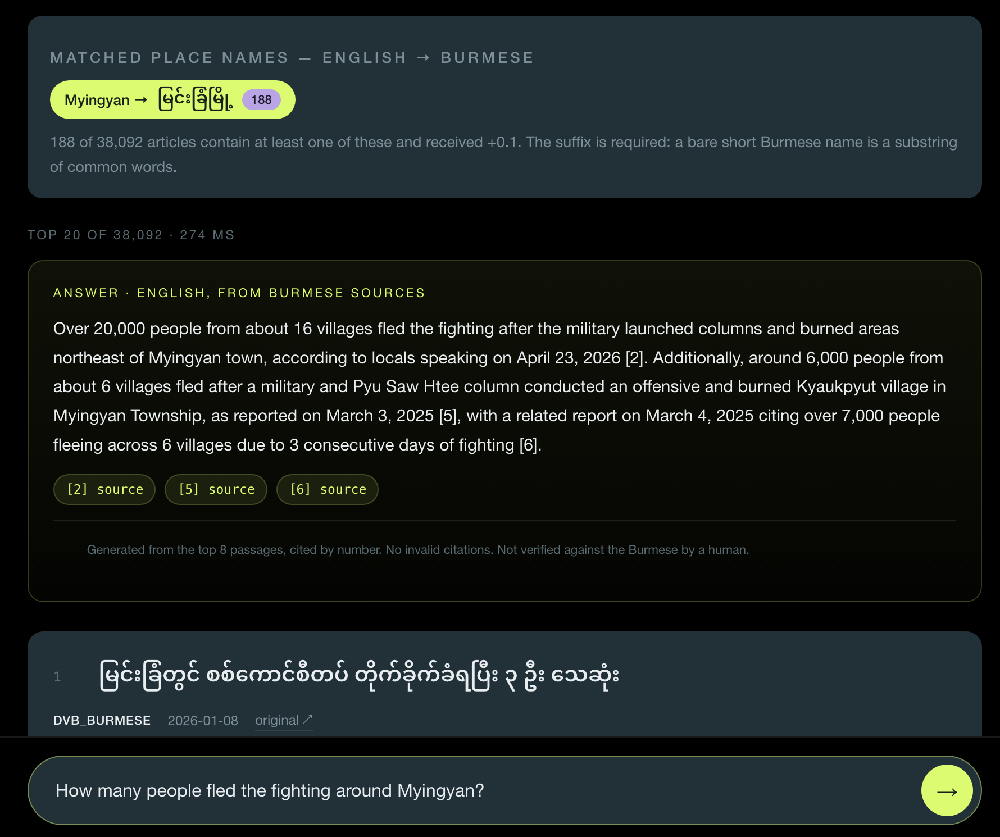

5 outlets · Feb 2021 – Sep 2026
372.7M characters archived
16 / 19
Desks Won by XLM-R
Macro-F1 0.672 vs 0.643 linear
62k articles · Weighted-F1 0.821
0.586
Recall@10 Retrieval
Dense BGE-M3 + Suffix Gazetteer
Place-name queries improve most
5/5 · 0
Refusals & Citations
5/5 negatives refused
0 invalid citations over 49 questions
Hand faithfulness check still open
Speaker Notes — Slide 1 (Introduction)
Good morning, Professor Al-antari and peers. This is MyHumNews. Since the February 2021 coup in Myanmar, the primary accounts of civilian casualties, airstrikes, and displacement exist almost entirely in Burmese-language reporting. Most international humanitarian responders, however, query in English. Rather than relying on fragile machine translation, this project builds three full deliverables: a 134,667-article corpus, transformer topic classifiers, and an end-to-end English-to-Burmese retrieval and synthesis system.
134,667
Articles
Feb 2021 – Sep 2026 · 7,607 duplicates removed
5
Outlets
DVB 78k · RFA 24k · Irrawaddy 15k · BBC 9k · Myanmar Now 9k
372.7M
Characters
83.0% Burmese script
20
Topic labels
19 DVB desks + Human Rights
59.6% publisher
32.7% predicted
includes 14,377 crosswalked from Irrawaddy and BBC tags
trained on DVB only, set for 0.80 precision
no label 7.7%
Honest limit: transfer to other outlets mostly fails. Only 2 of 13 labels reach 0.80 precision outside DVB.
Speaker Notes — Slide 2 (Dataset)
This is Deliverable 1. We crawled five Burmese newsrooms from February 2021 to September 2026: 142,274 raw rows, 7,607 duplicate URLs removed, HTML entities and timestamps fixed, giving 134,667 articles on Hugging Face as a private, gated dataset. The 20 labels are real newsroom desks: 19 from DVB plus human rights. We crosswalked Irrawaddy and BBC tags onto them, which gave 14,377 extra publisher labels, so 59.6% of articles have a publisher label. For RFA and Myanmar Now, which have almost none, a classifier trained on DVB fills in 32.7%, with thresholds set for 0.80 precision. Tested on other outlets, only 2 of 13 labels, economy and arts, reached 0.80, because each newsroom uses topics at different rates. So predictions live in their own column and are never merged with publisher labels. Note this dataset is not the RAG index, which uses only 38,092 articles from 2025 onward.
Fair comparison: XLM-R reads only the first 512 tokens, which cuts 60.1% of gold articles. So cards 1 and 3 give TF-IDF the same 512 tokens. Card 2 is a full-text TF-IDF run.
1 · Gold only
0.727 vs 0.621
TF-IDF beats XLM-R
XLM-R is the mean of 3 seeds (sd 0.040)
2 · Weak labels
0.755 → 0.702
16,087 section-name labels hurt
More weak labels, lower score.
3 · Targeted labels
+0.040
XLM-R, after +180 articles
TF-IDF gained +0.005. Gap 0.106 → 0.071.
Takeaway: the gap was supervision, not architecture. All 3 seeds improved, but 3 seeds is a small sample (paired p ≈ 0.16).
Speaker Notes — Slide 3 (HumSet Classifier)
This is the 7-label humanitarian classifier, trained on 383 gold articles labelled by hand, 298 by Hsu Lin Htet and 85 by me. First, a fairness point: Burmese breaks into many small tokens, so 60.1% of gold articles are longer than XLM-R's 512-token limit. A TF-IDF model reads the whole article, so in cards 1 and 3 I cut it to the same first 512 tokens. With so little data the linear model wins, 0.727 against 0.621 for XLM-R. I tried 16,087 weak labels made by rules on the newsrooms' section names, for example sport section means other. The score went down as I added more, from 0.755 to 0.702. Then I added 180 targeted articles: I ranked the corpus by how likely each article was to carry one of the two rare labels and hand-labelled the top ones. XLM-R gained 0.040 and TF-IDF only 0.005, so the gap shrank from 0.106 to 0.071. All three seeds improved, but with three seeds the evidence is suggestive, not proven.
0.672
XLM-R macro-F1
Linear model on the same 512 tokens: 0.643
0.124
COVID19, down from 0.818
Almost no COVID articles after 2024. Without it: 0.702.
Biggest gains over the linear model (F1)
Environment
+0.176 (0.867)
Low scores often mean the labels disagree. Across 13,283 near-identical DVB story pairs, newsroom agreement tracks model F1 at r = +0.874. On HumSet, two annotators agree at only κ 0.091 on humanitarian access.
Speaker Notes — Slide 4 (DVB-19 at Scale)
Now the same question with 62,016 labelled articles and DVB's 19 desks. Train is everything up to 2024 and test is 2025 onward. XLM-R gets 0.672 macro-F1 (a single training run) against 0.643 for the linear model on the same 512 tokens, and it wins 16 of the 19 desks. The biggest gains are on topics where meaning matters more than keywords: environment, education, arts. The one big loss is COVID19, which collapses to 0.124 because there are almost no COVID articles after 2024. Without it XLM-R scores 0.702. Why do some labels score low? I found 13,283 pairs of near-identical DVB stories. When DVB tags the two versions differently, our model also scores low on that label; the correlation is 0.874. So for social and ethnic, part of the low score comes from the labels, not the model. Second check: I re-labelled 50 of Hsu Lin Htet's gold articles blind. On humanitarian access kappa is only 0.091, so that label is shown separately as low confidence in the app.
Translated · Mean cosine 0.734
| National Unity Govt (NUG) | အမျိုးသားညီညွတ်ရေးအစိုးရ | 0.790 |
| World Food Programme | ကမ္ဘာ့စားနပ်ရိက္ခာအစီအစဉ် | 0.773 |
Transliterated · Places 0.487 · People 0.443
| Mandalay (မန္တလေး) | 0.403 | loses to Naypyitaw 0.440 |
| Myingyan (မြင်းခြံ) | 0.364 | loses to Naypyitaw 0.476 |
0.517 → 0.586
Recall@10 (15 → 17 of 29)
R@1 0.207 → 0.276 · MRR 0.310 → 0.391
0.118 → 0.235
Place questions, Recall@1
Myingyan rank 110 → 2
0.207 → 0.103
Chunking halved Recall@1
15 of 29 questions worse, 5 better
Speaker Notes — Slide 5 (Retrieval)
Deliverable 3 is cross-lingual RAG over 38,092 Burmese articles from 2025 onward, with no translation step. BGE-M3 alone gets 0.517 Recall@10. When I checked the 13 questions where the right article was not even in the top 20, 7 returned the right kind of event in the wrong place: Mandalay floods returned Assam, Naypyitaw housing returned Venezuela. Testing names directly showed why: translated names like National Unity Government align at 0.79, but transliterated place and person names sit around 0.44 to 0.49. Mandalay even scores lower against its own Burmese spelling than against Naypyitaw. So I added a 54-place English-to-Burmese lookup table with a +0.10 bonus. Burmese has no word spaces, so the town suffix is required: bare Kalay also means child and matches 18,086 articles; with the suffix it matches 1,059. Recall@10 rises from 0.517 to 0.586, 15 to 17 of 29 questions, and place-question Recall@1 doubles from 2 to 4 of 17. Questions without a place name do not change. I tested nine other variants and none beat it. Chunking into 218,000 pieces halved Recall@1. n is 29, so treat the direction as firmer than the exact gap.

16 / 16
Gold article cited
0.3 s search · ~7 s answer · 4 GB, 2 vCPU, no GPU
Open: 12 answers were written without the gold article retrieved. Hand-checking them against the Burmese is still to do.
Speaker Notes — Slide 6 (Answers and Live Demo)
Can we reject unanswerable questions with a score cutoff? No: asking about a SpaceX Starship launch gets 0.647 cosine, higher than 24 of our 29 real questions. So refusal happens in the generator. Gemini reads the top 8 Burmese passages and returns JSON saying whether the passages support an answer, plus which passages it used. Across 49 questions, all 5 out-of-scope questions were refused, none of the 16 answerable questions with the gold article retrieved were falsely refused, all 16 cited the gold article, and 0 citations were invalid. The screenshot is the live system on a small Azure VM with no GPU, answering K04: how many people fled the fighting around Myingyan. Search takes about a third of a second and the full answer about 7 seconds. The original Burmese articles are listed under the answer so a reader can check. One honest limit: on 12 questions where the gold article was not in the top 8, Gemini answered from other articles on the same topic, and hand-checking those 12 is still open work.
Labels
Part of the error is in the labels
r = 0.874
Classification
More labels beat a bigger model
XLM-R wins 16 of 19 at 62k articles
Retrieval
Meaning crosses languages, names don't
Recall@10 0.586
Next · all 134,667 articles, 2021–2026
Speaker Notes — Slide 7 (Conclusion)
The point of this project: someone who doesn't read Burmese can ask Burmese news a question in English and get a cited answer. The right article is in the top 10 for about 6 in 10 of our test questions, and names are the weak spot. Three lessons. First, part of the error is in the labels: when DVB tags near-identical stories differently, the model scores low on that topic too. Second, more labels beat a bigger model: with 383 hand-labelled articles the simple model wins, with 62 thousand XLM-R wins 16 of 19 topics. Third, meaning crosses languages but transliterated names don't, which is why the place-name table helped. Next, I'll go from the 38 thousand articles of 2025 onward to all 134,667, which adds the coup years. First I'll hand-label about 100 older articles to check the classifier still works on that period, since it has only seen 2025 news. Then classify and search everything, with new test questions and coup-era place and people names, and last, hand-check the 12 unverified answers and ask the newsrooms before a public release.
Thank you
Questions?
Try the live demo
https://humnews.indonesiacentral.cloudapp.azure.com/rag/
Username demo · Password humnews-demo
Dataset
https://huggingface.co/datasets/usagi-yojimbo/MyHumNews
Private for now · access on request
Speaker Notes — Slide 8 (Thank You)
Thank you. The demo login and the dataset link are on screen, so you can try it yourself. I'm happy to take questions, and I can show the live demo if there is time.